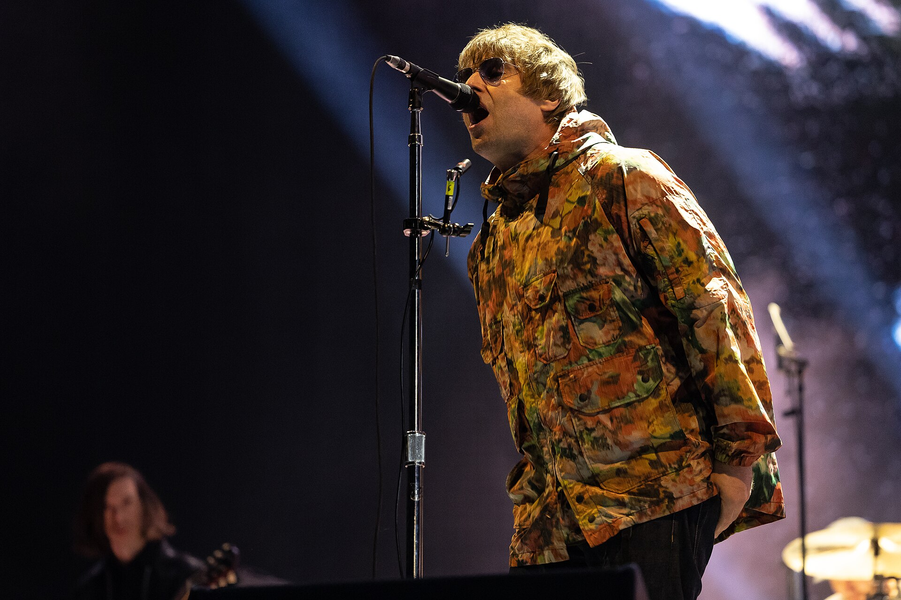
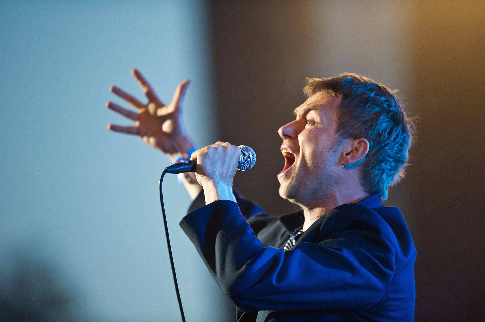
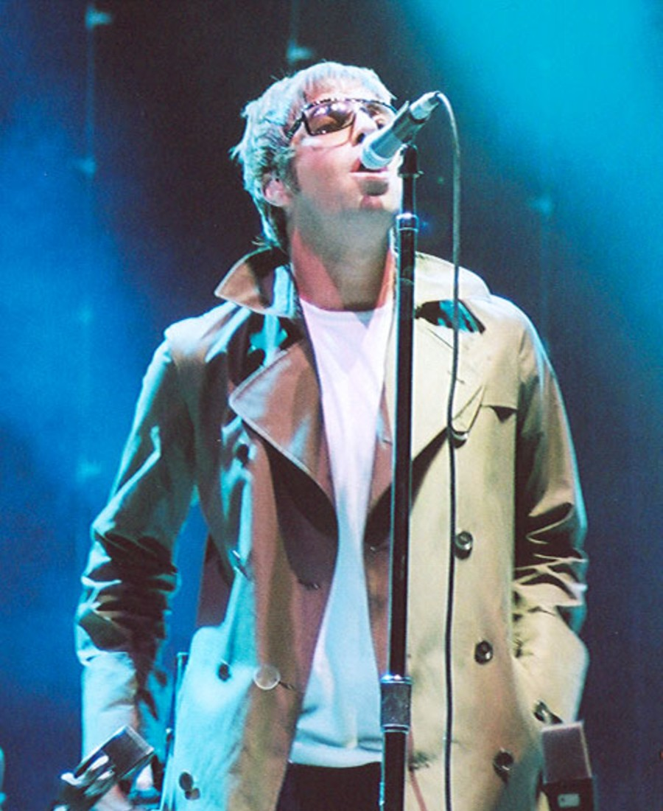
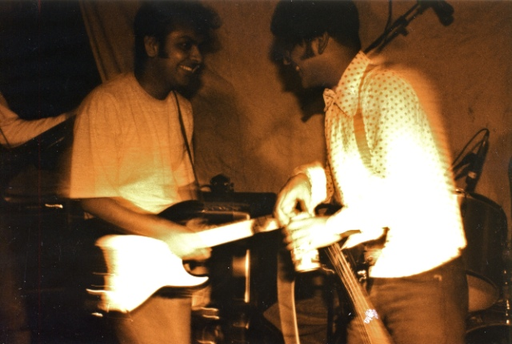

britpop

a guided tour of the 1990s
Britpop in the 1990s
Oasis, Blur, Pulp and Suede
Your guideAlex Godoy Masero
the big four

oasisManchester
Liam & Noel Gallagher
(What's the Story) Morning Glory?, 1995
“Wonderwall”

blurLondon
Damon Albarn
Parklife, 1994
“Girls & Boys”
 pulp
pulpSheffield
Jarvis Cocker
Different Class, 1995
“Common People”
 suede
suedeLondon
Brett Anderson
Suede, 1993
“Animal Nitrate”
Also on the scene: Elastica, Supergrass, The Verve, Ocean Colour Scene
The Battle of Britpop
Track 3
Monday 14 August 1995

Blur“Country House”
South, London, art school
Oasis“Roll With It”
North, Manchester, working class

Two singles, one day: on the BBC Six O'Clock News, like an election
Blur won the battle. Oasis won the war.
20M+Morning Glory
albums sold
why it matters in the commonwealth
A British movement that travelled the English-speaking world


one flag, many nations
Union Jack on the flags of Australia, New Zealand, Fiji, Tuvalu. Tuvalu: removed 1995, back 1997
one language
English lyrics travel easily. Big hits in Australia, Canada and New Zealand

a multicultural britain
Cornershop, “Brimful of Asha”: UK No. 1, 1998. About Indian star Asha Bhosle
Oasis Live '25
- Cardiff
- Manchester
- London
- Edinburgh
- Dublin
- Toronto
- Chicago
- Los Angeles
- Mexico City
- Tokyo
- Seoul
- Melbourne
- Sydney
- Buenos Aires
- Santiago
- São Paulo
Lit up: Commonwealth cities
soft power
A young, modern UK. The 2025 reunion filled stadiums across the Commonwealth